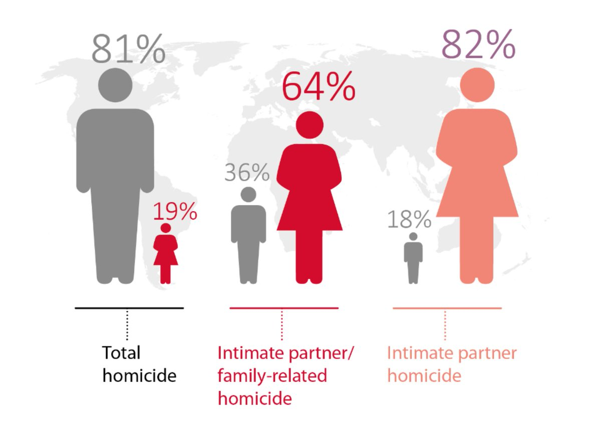
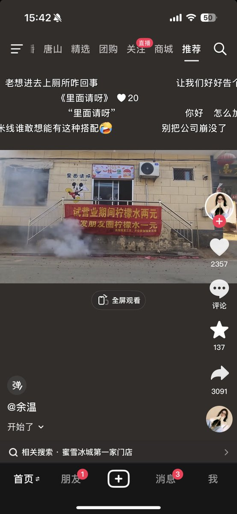

@yantanzhang
😋
所有人都去看这个无立场

😋
所有人都去看这个无立场


全球总凶杀案、即除战争外的一切凶杀案，有81%的被杀害的死者是男性！剩下的19%才是女性
全球所有「亲密/家庭关系」凶杀案件、即妻夫父子兄弟…等都有可能，64%女36%男
全球所有「亲密关系」凶杀案件、即婚姻/恋爱（绝大部分是异性恋），82%女17%男
证据在此，联合国官方🔗https://t.co/eXNiVSzB8k https://t.co/bGv3RT6vwF
全球所有「亲密/家庭关系」凶杀案件、即妻夫父子兄弟…等都有可能，64%女36%男
全球所有「亲密关系」凶杀案件、即婚姻/恋爱（绝大部分是异性恋），82%女17%男
证据在此，联合国官方🔗https://t.co/eXNiVSzB8k https://t.co/bGv3RT6vwF